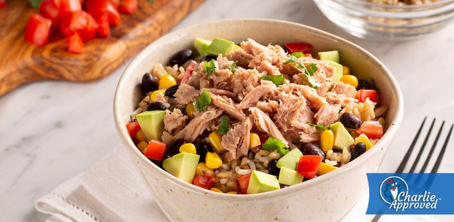

Arroz, frijoles y atun en bowl

Descripcion:
Este es un plato de alto valor nutricional y bajo esfuerzo a la hora de prepararlo. Personalmente es uno de mis favoritos :)
Los bowls
son la versión moderna del plato único pero con dos condiciones: preparado con ingredientes sanos y servido en un bonito tazón.
Ingrediente:
- 1 lata de atun
- 1/4 de taza de frijoles negros cocidos
- 1 taza de arroz blanco o integral
- 2cdas de tomate en trocitos
- 2 cdas de maiz dulce
- 2 cdas de aguacate picado
- cilantro picado al gusto
Pasos:
- Cocinar el arroz
- Cocinar los frijoles
- Cubre con los tomates, el maíz, los frijoles negros y el atún, y mezcla bien.
- Adorna con el aguacate y el cilantro picado.